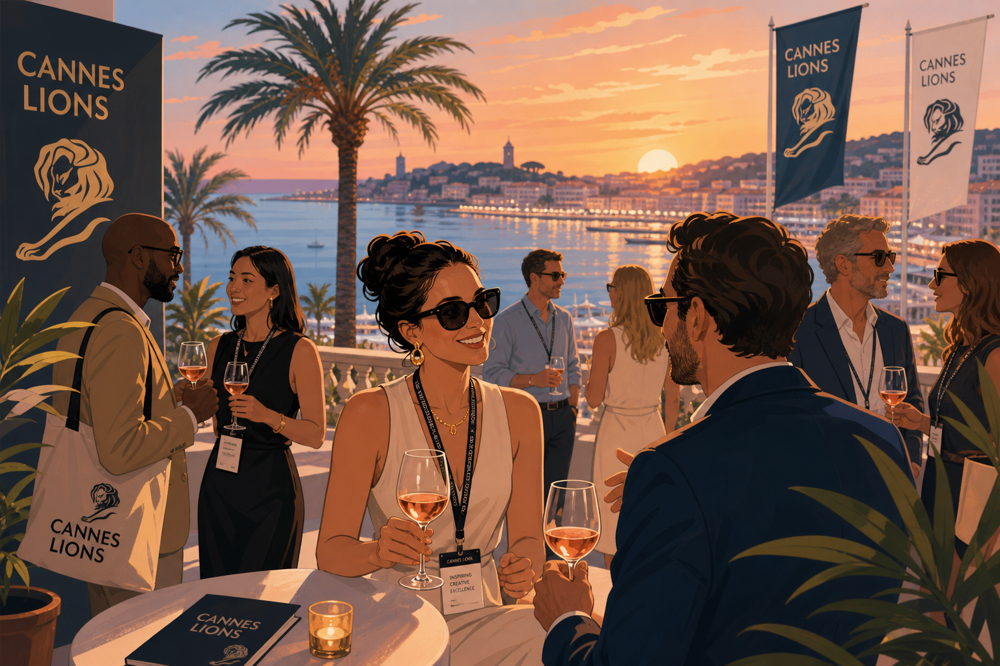

Two weeks out from the world's biggest brand conference — the men championing creativity, connection, and conversion on the Croisette.
The Grand-Daddy of All Festival Weeks Is Here
What's your why for Cannes Lions 2026 — and why does it matter more than ever
Cannes Lions is the world's biggest brand conference. Ten-hour meeting days. Back-to-back RFPs. Conference rooms with no windows. But here is the thing. This is exactly the kind of vacation I have been chasing my whole career. A room full of people who want to build things that have not been built yet. That is not exhausting. That is energizing.
Happy Monday. We are two weeks out. The Croisette is calling. The rosé is chilling. And so, in the grand tradition of honoring the men who show up with more than a badge and a sunburn, I am proud to present this week's Man Champion Monday: Cannes Lions Edition.
First, a shout-out to the people making access possible. ED, Founder of Emerge, admin of the WhatsApp group Cannes Unlocked, who has been quietly running the most valuable group chat in advertising since most of us were still figuring out our out-of-office messages. The accessibility team at Delegates, Lume, and the press team anchored by Eider: you are the ones who make the magic move.
This year, Cannes intersects with the World Cup, the first time the tournament lands in the United States in 30 years. The demographics have massively changed since then. Most brand playbooks, unfortunately, have not kept pace. That tension will be the real conversation in every room on the Croisette this June.
And if you blinked, you also missed that the World Economic Forum's Summer Davos runs June 23 to 25 in China, and the Aspen Ideas Festival runs June 22 through July 1. So if you ever wanted to be in three intellectually serious rooms at once, this is your fortnight.
FLIGHT, FACETIME, FEELINGS, AND FIFA
As I map out my two stops between Air Canada and United Airlines, figure out what to pack in 35-degree Mediterranean heat, and try to keep the adrenaline from running ahead of the itinerary, here is what is setting the cultural mood this season: World Cup mania is in full effect. Nike broke its own rules in its campaign. Lionel Messi is, somehow, everywhere at once. Netflix did not buy a broadcast deal. Instead it launched FIFA World Cup: Launch Edition, a game with no ads, no sponsors, and no in-game purchases. Dhar Mann is debuting a streaming series called Unlikely Romances on Samsung TV. YouTube star Markiplier's indie film Iron Lung was a hit. Kane Parsons' Backrooms and Curry Barker's Obsession are both in theaters and wildly outperforming expectations. Creator talent is finally going mainstream in the most satisfying way.
THE BIGGEST HEADLINE OF THE FESTIVAL
Eddy Cue, Apple's SVP of Services and Health, has been named the 2026 Cannes Lions Entertainment Person of the Year. He joins Mattel's Ynon Kreiz and Netflix's Ted Sarandos as recipients of a trophy that honors creativity which inspires others to produce truly compelling, meaningful content. Under Cue's leadership, Apple TV has held the top spot for highest critically rated original programming among all streaming services for five consecutive years. On Monday June 22, he sits down with producer Jerry Bruckheimer, whose F1: The Movie grossed over 630 million dollars worldwide and earned multiple Oscar nominations including Best Picture, for a fireside chat at the Palais. That is not a panel. That is an event.
Senior VP, Business Insider — Ultra Runner — Former Division 1 Athlete — Motivational Speaker
Anthony DeMaio has completed over 20 consecutive NYC Marathons. Not participated. Completed. While holding down a senior executive role at one of the most recognized media brands on the planet. He did not just run through a wall. He apparently enjoyed it so much he keeps going back. A former Division 1 wrestler who decided that after decades of throwing people to the mat, running very long distances in major cities was the logical next chapter. At Cannes, he is organizing morning runs Monday through Wednesday at 7am at Sport Beach, and hosting the CMO Insider Breakfast, Business Insider's signature gathering for senior marketing leaders. If you want to meet someone who will outwork you, outlast you, and then make you feel great about it, Anthony is your man. Set your alarm.
Writer, Famous Campaigns — Speaker, Cannes Lions
James Heering opened his Cannes Lions announcement with: "LinkedIn law requires me to announce I'm going to Cannes Lions. And then immediately shed dozens of followers." Which is, without question, the most accurate description of Cannes season content that has ever been written. He is speaking. He is writing. He is at Famous Campaigns. If you are doing a thing or launching a thing, he said to drop him a line, and I respect a man who leads with honesty and a working email. James is proof that you can attend the grandest creative festival on earth and still maintain a functional sense of self-awareness. Rare. Genuinely rare.
President and CMO, First Round (Diageo x Main Street Advisors JV) — Forbes Most Influential CMO
Nick Tran is bringing the CÎROC Athletic Club to the French Riviera from June 22 to 25. No hard sells. No agenda. No panels. Just live DJs, pickleball with celebrity coach Matt Manasse, massages, IV drips, beauty stations, and exceptional cocktails throughout. He is essentially hosting the version of Cannes that everyone secretly wants to attend. The man has figured out that the best conversations happen when nobody is performing for a slide deck. Henry Crown Fellow. Dad. And apparently the architect of the most civilized hangover recovery experience the Côte d'Azur has ever seen.
Paul Kemp-Robertson is solving one of the most universal problems in the festival world: you attend five extraordinary days of talks, absorb more insight than any human brain was designed to hold in a single week, and then someone at home asks "how was it?" and you stare at them blankly. On Friday June 26 at 2pm in the Debussy Theatre, he hosts Cannes Lions Wrap-Up Live: 90 minutes, one week of festival distilled, delivered by editors from WARC, Contagious, and Cannes Lions themselves. Featured voices across the week include Demis Hassabis, Denise Dresser, Tessa Lyons, and Oprah Winfrey. Paul's session is the cheat sheet that no one should leave without. He calls it "writers' room meets current affairs show." I call it the most efficient use of 90 minutes on the entire Croisette.
Founder — Fine Art, Fashion, Events, Hospitality, Real Estate, and About Six Other Industries
Christopher Carew has worked in fine art, fashion design, event production, web design, product design, sales, marketing, music production, hospitality, foodservice, construction, real estate, and automation. That is not a career path. That is a personality. He has over 700 people registered for his side event at Lions Cannes through Luma. If you are looking for someone who has genuinely done almost everything and is now channeling all of it into one room, find Christopher. He is the human equivalent of a Swiss Army knife at a knife convention.
CPG Leader — 2026 Cannes Lions Brand Marketing Academy, One of 40 Selected Globally
Jean Thor Kenzo has been officially accepted into the 2026 Cannes Lions Brand Marketing Academy as one of just 40 marketers selected from around the world. In the consumer packaged goods industry, where competition is relentless and shelf space is finite, Jean has carved out something genuinely his own. Being selected for an Academy that turns down the vast majority of applicants is the kind of thing you put in the first line of any professional bio. He is heading to Cannes not just to network but to learn. That distinction matters more than most people admit.
Global Chief Marketing Officer, Levi Strauss and Co.
Nearly two decades ago, Kenneth Mitchell tried to hire Dr. Marcus Collins as an intern at Gatorade. He did not get the hire. He got something better: a two-decade relationship with one of the sharpest cultural thinkers in the business. Kenneth has since made his mark at PepsiCo, NASCAR, McDonald's, Snap, and now Levi's, where he holds the CMO title for one of the most iconic apparel brands in history. On Thursday June 25 at Club Croisette, he joins Marcus Collins for a breakfast conversation on culture, commerce, and what it actually takes to lead in both the front stage and the back stage of an organization. The intern who got away became the professor's best case study. Poetry
Professor — Best-Selling Author — Culture Scholar — Podcast Host — Keynote Speaker
Dr. Marcus Collins once said that if culture eats strategy for breakfast, he would like to invite you to join him at the table. At Cannes Lions 2026, that table is set at Club Croisette on June 25 as part of his LIONS Learning course, Masters of Cultural Influence, where he and Kenneth Mitchell will dissect culture, brand, and leadership over a meal. Marcus has a rare ability to connect culture, human behavior, and business in ways that make you see the world differently. He is one of those people who make you smarter in a single conversation. That is not a figure of speech. That is a documented phenomenon among everyone who has sat across from him.
Marketing Leader — Co-Host, Sprout Social Creator Network at Cannes
Curtis Midkiff sent Pinterest a message that 54 creators in the Sprout Social Creator Network wanted to connect with them at Cannes. He did not wait for an introduction. He did not set up a committee to explore the possibility of a potential meeting. He sent the message. That is the energy. Now Sprout Social has welcomed over 200 creators to its Creator Network, officially launching at Cannes. Among those 200 is Joel Bervell. Curtis is the kind of connector who understands that relationships are built by the people who pick up the phone first
Peabody and Webby Award-Winning Medical Mythbuster — TIME 100 Creator — TED Fellow — 500M+ Views
Joel Bervell just turned 31. He has a Peabody Award. A Webby. A TIME 100 designation. A TED Fellowship. Over 500 million views. A Forbes Under 30 listing. And he will be at Cannes Lions for the very first time, speaking on a panel called "The Algorithm Doesn't Know Your Culture: Building Trust in the Age of AI." He is also one of the 200 creators joining the Sprout Social Creator Network at its Cannes launch. Joel is proof that you do not have to be in every room for the past decade to walk into the right room and immediately belong. He earned his seat. Every single one of them.
Managing Director, Growth and Partnerships, North America — GALE / Stagwell
Stephen Larkin will be at Sports Beach and around the Croisette with GALE and Stagwell, meeting clients, partners, and friends. Stagwell's programming this year features leading brands, athletes, and cultural voices, and Stephen is one of the people who makes those rooms work. Not from the stage. From the handshake before the stage. Growth and partnerships is not a job title for someone who wants to be seen. It is a job title for someone who knows that the most important conversations are the ones happening just outside the frame. Stephen knows where those conversations are.
CDMO, SAPMENA Region — L'Oréal Groupe — Marketing Week Top 100 — Campaign Power 100
Lex Bradshaw-Zanger is coming from Singapore to serve as Dean of the Cannes Lions Brand Marketing Academy, welcoming 40 exceptional marketers from around the world into a full week of creative immersion. Speakers include Netflix, Procter and Gamble, and The Marketing Academy. He describes himself as more excited to coach these 40 future leaders than they are to be there, which is either incredibly generous or reflects the kind of commitment to mentorship that very few senior executives actually demonstrate. The students he is about to meet are lucky.
Creator — Streaming Series Debut, Unlikely Romances on Samsung TV
Dhar Mann is debuting a streaming series called Unlikely Romances on Samsung TV while heading to Cannes, where he can be reached through partners.dharmann.com.
He arrives with John Kraski, his partnerships lead and Forbes number 2 Creator with an MBA in Entertainment from USC, and
Justin Hochberg, who has built over 500 million dollars in partnerships, architected over 30 global TV formats, and is a former Microsoft executive and Roblox and gaming strategist. The Dhar Mann team is not attending Cannes for the parties. They are attending for what happens after the parties, when the deals get made and the formats get built.
Chief Executive Officer, LIONS — Cannes Lions, Effie, WARC, Contagious, Acuity Pricing
Simon Cook runs Cannes Lions. He also hosts the podcast Second Wind, where he recently reflected on conversations with 80 of the world's leading CEOs. He is the person who named Eddy Cue Entertainment Person of the Year, who builds the programme that draws everyone else on this list to the South of France, and who still finds time to go deep on leadership and vision in long-form audio. The man who runs the grandest creative festival in the world apparently has enough left in the tank at the end of the day to talk CEO psychology with 80 of the people who matter most. That is either impressive discipline or the sign of someone who has genuinely found their purpose. Possibly both.
MEN'S FASHION AT CANNES — FROM DAWN TO NIGHTFALL
01. Wear natural fibers and commit to bold color. The heat will make you regret synthetics by 9am, and the bold color will make people remember you by 9pm. It is also the easiest conversation starter on the Croisette. Someone will always ask about the shirt.
02. Comfortable shoes. Cannes is not the venue for your best leather oxfords. It is a walking city in southern French summer heat. Dress your feet like someone who respects them.
03. Pre-register for everything now. The biggest events happen in the evening and most are invite-only. Your network is your access pass. Use it before you land.
04. Position yourself in the Carlton Lobby or the Hotel Martinez Lobby. You will not believe who walks through those rooms. Some of the best conversations happen entirely by accident in a hotel lobby at 11am on a Tuesday.
05. Not every yacht party deserves half your day. Some are worth it. Some are a full afternoon of your most valuable conference time sitting on a boat going nowhere at anchor. Choose wisely.
06. Find Gutter Alley in the evenings. This is where award winners end up celebrating. There is nothing quite like seeing a Cannes Lion in someone's hands while the team behind the work lets the moment fully arrive.
07. Do not overbook. The best meetings I have had at Cannes were not scheduled. Build space into your day. And when you do schedule, do it around meals. Malnutrition is a documented Cannes condition.
08. Take notes at the end of every day. You will meet more remarkable people in five days than your memory can reasonably hold. Connect on LinkedIn immediately and send a short note while you still remember who they are and what you talked about.
09. Study the speaker schedule before you arrive. At any given moment there are over 50 events running simultaneously. Know your priorities or you will spend the entire week attending the second-best thing happening at that hour.
10. Genuinely enjoy it. There is no event in the world quite like this one. Brilliant people. The Mediterranean. Real conversations about building things that have not been built yet. That is the whole point.
https://fr.pinterest.com/canneslions/what-to-wear-at-cannes-lio
FOR BRANDS, AGENCIES, AND TECH COMPANIES
Do not announce just because it is Cannes. Journalists are flooded. Substance beats timing, every time. Lead with insight, not product. Executives who bring a perspective on AI, creator economics, media fragmentation, or measurement earn more meaningful conversations than those running product demos. Use Cannes to build relationships, not chase coverage. The most valuable outcomes often arrive six months later. Create content while you are all in the same room. A week of conversations can fuel months of communications. And most importantly, have a point of view. The brands that stand out are the ones contributing something real to the industry's biggest arguments.
Cannes is ultimately a relationship-building event dressed up as an awards festival. Treat it that way and the return on the investment competes with almost anything else you will do this year.
The Armani Café has a lovely outdoor terrace. An iced coffee and a cake in the morning before the day accelerates is not a luxury. It is a strategy. Drop your own recommendation in the comments. Where should people be eating, drinking, and networking this year.
I am heading to Cannes with this clear goals beyond the conversations.
I am telling stories for DA News, hopefully moderating panels, building brand partnerships, and raising a pre-seed round for ConcordeApp and the Semaform Foundation. If any of that is relevant to what you are building or backing, let us find fifteen minutes on the Croisette. The Mediterranean is the most civilized backdrop for a pitch I have ever found.
The mention of learning alongside networking is important. Too often people focus on who they can meet instead of what they can learn.
Cannes continues to evolve from a marketing festival into a broader gathering of creators, innovators, and business leaders. That shift makes it more relevant than ever.
What caught my attention is how many of these leaders are creating spaces for meaningful conversations rather than just promoting themselves. That's where real value is built.
The best conferences aren't about collecting business cards. They're about finding one insight or one relationship that changes how you think. This article captures that well.
Great read. The leaders featured all seem to share one trait: intentionality. They know why they're attending, who they want to meet, and what they hope to learn.
🦁 WOMEN CHAMPION WEDNESDAY · MAMA LION · CANNES LIONS 2026 "They Said Women Aren't Running Cannes. Meet the 23 Who Are…
I'll be honest with you. I used to think Cannes Lions was just a fancy excuse for ad people to drink rosé in the south…
These men are playing like there could be. 🦁 Man Champion Monday — Happy New Month Right now, Lionel Messi's face is…
Women Champion Wednesday Shrinking budgets. Rising AI.
May is unwinding like a perfectly pitched campaign, full of bold ideas, bigger possibilities, and men who are quietly…
Cannes Lions season is officially here. ☀️🦁 You can feel it all over LinkedIn.
This year, April Fools felt different. More brands launched actual products—not just pranks.
The Handshake Summit & Awards expands to the World Bank/IMF Spring Meetings, convening global leaders to redefine…
No more tears. If slicing onions has you sobbing like those Sarah McLachlan ASPCA commercials, science has a cure for…
